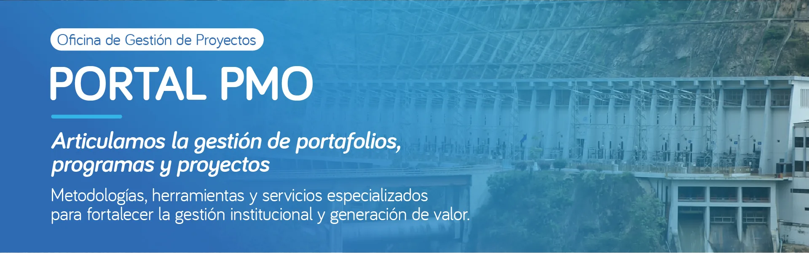
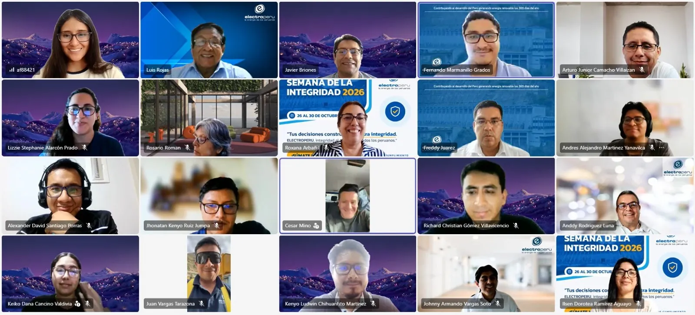
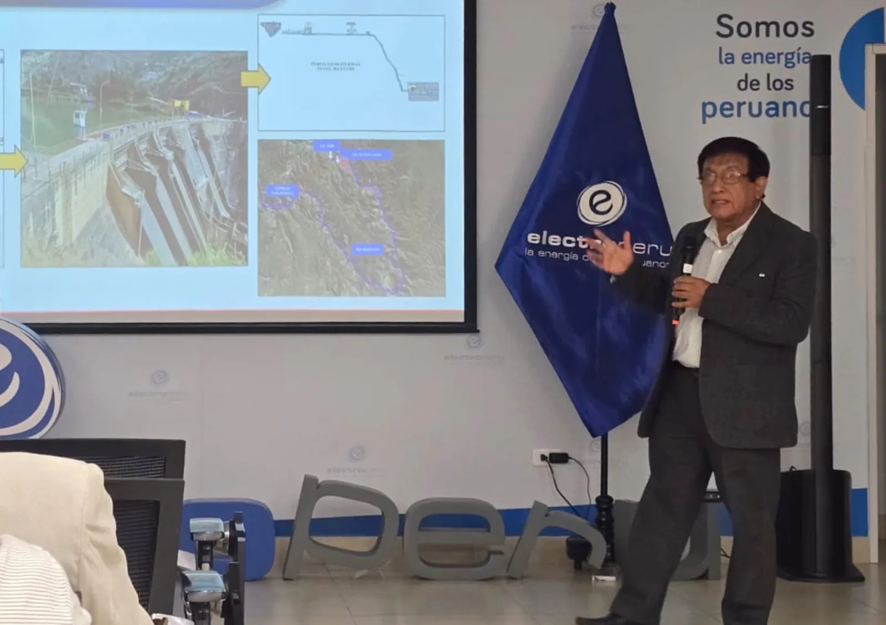

Conoce nuestra PMO
La Oficina de Gestión de Proyectos (PMO) de ELECTROPERU impulsa una gestión integrada y estratégica de los portafolios, programas y proyectos de la organización, promoviendo la aplicación de metodologías, herramientas y buenas prácticas que contribuyen al cumplimiento de los objetivos institucionales.
A través de una visión articulada, fortalecemos la planificación, el seguimiento y el control de las iniciativas, buscando optimizar los recursos, gestionar los riesgos y maximizar la generación de valor para la empresa y el país.
Indicadores actualizados desde Power BI · Ver en pantalla completa
Noticias y novedades
Avances, iniciativas y conocimiento de la PMO.
Proyectos
Consulta el portafolio de proyectos y sus principales indicadores de gestión.
Proyectos destacados
Imágenes de los proyectos más relevantes de ELECTROPERU.
3 fotografías
Gestión BIM
Videos
Nuestros portafolios
La gestión de portafolios organiza y articula iniciativas, programas y proyectos para contribuir al cumplimiento de los objetivos estratégicos de ELECTROPERU.
Los diez portafolios, en su conjunto, contribuyen al OEI 7: Mejorar la Gestión de Portafolios.
Gestión PMO
Conoce la evolución de la Oficina de Gestión de Proyectos y las iniciativas que fortalecen la gestión del conocimiento y el desarrollo de capacidades.
Historia y evolución de la PMO
Pasa el cursor sobre una fecha o selecciónala para descubrir el hito y su ícono.


Gestión del conocimiento
Desde 2025, ELECTROPERU desarrolla un Plan de Mentoría para preservar conocimientos críticos, compartir experiencias y fortalecer la continuidad de las funciones estratégicas.
ELECTROPERU en los PMO Awards 2026
En 2026, ELECTROPERU llevó su experiencia de gestión de proyectos a una competencia internacional del PMI y avanzó hasta la etapa regional, en un proceso de evaluación y aprendizaje institucional.
Gestión del conocimiento
El Plan de Mentoría de la Gerencia de Proyectos busca preservar y transferir los conocimientos especializados acumulados por los profesionales de ELECTROPERU, y evitar la pérdida de capacidades críticas ante la próxima jubilación de colaboradores con amplia trayectoria.
Un primer año de transferencia de experiencia
Durante 2025 participaron como mentores el Ing. Juan Carbajal Yauri, el Ing. Jesús Tordoya Cornejo y el Econ. Manuel Moncada de Lucio. Entre abril y agosto desarrollaron nueve sesiones estructuradas en las que compartieron conocimientos técnicos, experiencias profesionales y lecciones aprendidas.
Temas abordados
- Gestión de licencias y autorizaciones.
- Proyectos geotécnicos.
- Gestión de riesgos.
- Administración de contratos.
Los materiales y presentaciones generados se incorporaron al repositorio corporativo, contribuyendo a sistematizar y preservar el conocimiento institucional.
Continuidad en 2026
En 2026, la iniciativa continuó con la participación del Ing. Luis Rojas. La metodología contempla también el acompañamiento de un colaborador que pueda prepararse progresivamente para asumir las funciones y responsabilidades del profesional próximo a jubilarse.
Experiencias que se comparten


La PMO busca fortalecer el programa y extenderlo progresivamente a otras gerencias, promoviendo el aprendizaje intergeneracional y la continuidad operativa de las funciones estratégicas de ELECTROPERU.
ELECTROPERU en los PMI PMO Awards 2026
La participación permitió evaluar la madurez de la PMO, contrastar su modelo de gestión con experiencias internacionales e identificar fortalezas y oportunidades de mejora para continuar fortaleciendo la gestión del portafolio de inversiones.
Una postulación que puso en valor el trabajo de la PMO
El proceso incluyó la elaboración de un informe institucional sobre funciones, metodologías, procesos, herramientas e iniciativas de la PMO, así como un video de presentación con la participación de representantes de la Alta Dirección, la Gerencia de Proyectos y otras áreas de ELECTROPERU.
¿Qué se evaluó?
Herramientas e iniciativas presentadas
- Manual para la Gestión del Portafolio, Programas y Proyectos.
- Manual de Gestión BIM y Entorno Común de Datos (CDE).
- Repositorio del Portafolio de Proyectos en SharePoint.
- Base de Datos de Lecciones Aprendidas y Plan de Mentoría.
- Seguimiento y control mediante Planner y gestión de programas mediante Microsoft Teams.
- Dashboard de Reporte de Gestión con indicadores CPI y SPI, curvas S, estados situacionales y riesgos.
Un avance y una oportunidad para seguir evolucionando
La competencia contempló una etapa grupal, instancias de eliminación y finales regionales en cinco regiones: África, Asia-Pacífico, Europa, Medio Oriente y América. ELECTROPERU avanzó hasta la etapa regional, llevando su experiencia institucional a un escenario internacional.
La participación permitió visibilizar los avances de la PMO, contrastar sus capacidades y reconocer desafíos para continuar incorporando buenas prácticas, fortalecer herramientas digitales y consolidar una cultura de gestión orientada a la generación de valor.
ELECTROPERU en los PMO Awards 2026

Organización de la PMO
Selecciona un nodo para conocer la función de cada instancia y equipo.
Patrocina la gestión de los portafolios y brinda respaldo ejecutivo para su alineamiento estratégico.
Documentos
Manuales y recursos descargables para la gestión de proyectos.
1 documento